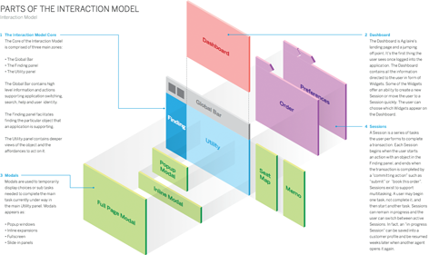

Design Thinking is an iterative process in which we seek to understand the user, challenge assumptions, and redefine problems in an attempt to identify alternative strategies and solutions that might not be instantly apparent with our initial level of understanding. At the same time, Design Thinking provides a solution-based approach to solving problems. It is a way of thinking and working as well as a collection of hands-on methods.
Design Thinking revolves around a deep interest in developing an understanding of the people for whom we’re designing the products or services. It helps us observe and develop empathy with the target user. Design Thinking helps us in the process of questioning: questioning the problem, questioning the assumptions, and questioning the implications. Design Thinking is extremely useful in tackling problems that are ill-defined or unknown, by re-framing the problem in human-centric ways, creating many ideas in brainstorming sessions, and adopting a hands-on approach in prototyping and testing. Design Thinking also involves ongoing experimentation: sketching, prototyping, testing, and trying out concepts and ideas.
Discoverability
Can users quickly find the model’s? Understand the primary object and perform the actions they care about? Can they use the system successfully at the first time?
Learnability
How long does it take for users to internalize? How to use the system competently? Even consumer products often have a slight learning curve today.
User Efficiency and Productivity
Once users are competent in using the system, how easy is it for them to perform common or repetitive tasks? Can they perform bulk actions all at once, or do they have to perform dozens or even hundreds of separate actions?
System response time
Once users take an action, how long does the system take to respond? In a production environment, user efficiency and system response time combine to define the total task time
Delight
How cool does the product feel to users? Do users like to use it? How much do they like it—especially in comparison to other products?
1D: Words should be simple to understand, and written in such a way that they communicate information easily to the end user
2D: Visual Representations are all graphics or images, essentially everything that is not text. They should be used in moderation, so as to not overwhelm.
3D: Physical Objects or space refers to the physical hardware, whether it’s a mouse and keyboard, or a mobile device a user interacts with.
4D: Time is the length that the user spends interacting with the first three dimensions. It includes the ways in which the user might measure progress, as well as sound and animation.
5D: Behavior What Puts the Design in Interaction Design. It is the emotions and reactions that the user has when interacting with the system.
Layers Of Interaction model

There are many variants of the Design Thinking process in use today, and they have from three to seven phases, stages, or modes. However, all variants of Design Thinking are very similar. All variants of Design Thinking embody the same principles, which were first described by Nobel Prize laureate Herbert Simon in The Sciences of the Artificial in 1969. Here, we will focus on the five-phase model proposed by the Hasso-Plattner Institute of Design at Stanford, which is also known as d.school. We’ve chosen d.school’s approach because they’re at the forefront of applying and teaching Design Thinking. The five phases of Design Thinking, are as follows:
- Empathise – with your users
- Define – your users’ needs, their problem, and your insights
- Ideate – by challenging assumptions and creating ideas for innovative solutions
- Prototype – to start creating solutions
- Test – solutions
It is important to note that the five phases, stages, or modes are not always sequential. They do not have to follow any specific order and can often occur in parallel and repeat iteratively. Given that, you should not understand the phases as a hierarchical or step-by-step process. Instead, you should look at it as an overview of the modes or phases that contribute to an innovative project, rather than sequential steps.